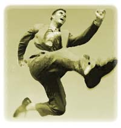
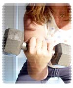

| Exercise Options for Busy People
Contributed
by: Julio Ceres R. Ibay
Being
physically inactive is as damaging to health as smoking cigarettes.
A majority of people shun smoking because of the health implications.
Why, then, aren't more people willing to exercise?
Part of the reason may be the word "exercise." Exercise seems
to imply rigid, "no-fun" workouts that make us huff and puff
and sweat. Workouts also can be time-consuming It is hard
to find time in a busy day to go to a gym, change, work out,
shower, change again, and drive home. Unfortunately, many
people view exercise as an impractical burden that complicates
rather than complements a busy life.
However, there is another option. Moderate physical activities
like brisk walking can promote health nearly as much as vigorous
workouts. This means we can set aside the boot-camp mentality
in favor of physical activities that are less demanding and
more enjoyable.
Make Workouts Work. Softening the rules
doesn't mean you can play checkers on your lunch hour to satisfy
your body's need for physical activity. You need to get at
least 30 minutes of moderate physical activity that involves
moving your whole body daily. Try some of these tips on fitting
exercise into your busy day.
Commit yourself.
You owe it to yourself and to your family to be as healthy
as you can be. Committing to daily physical activities is
an important part of a healthy lifestyle.
Goal for it. Set short-term
and long-term goals. A short-term goal could be starting from
scratch and adding a minute a day to your exercise regimen.
A long-term goal could be losing weight or lowering your blood
pressure.
Break it up.
Exercise doesn't have to be structured. Busy people can get
much the same benefits when they exercise in bits and pieces
throughout the day as when they work out in one block of time.
Pencil yourself in.
On especially busy days, you may not be able to spontaneously
get a minimal amount of physical activity, so you need to
plan ahead. Pencil in an exercise appointment, and consider
it a mandatory meeting.
Avoid
the all-or-nothing trap. If circumstances prevent
you from doing everything you planned for the day, do what
you can and don't worry about it. Tomorrow is a new day with
new opportunities to exercise. Keep perspective. If you fall
off your routine for a time because of injury or illness,
just get back on. Interruptions are part of life. Be realistic.
Don't focus on exercises you find unpleasant or uncomfortable.
Choosing activities you enjoy will help you stick with your
program.
Gear up. Spontaneous
exercise may depend on having walking shoes or a change of
clothes available.
Have equipment on hand.
Buy a piece of exercise equipment, place it in a convenient
location at home, and jump on it when you have a few minutes
to spare.
Recruit a friend.
Engaging in physical activities together is a good way to
keep a friendship alive.
Jump on spare time.
On weekends or other "down time," take a long walk or hike
in the woods.
Balance your workouts.
New guidelines from the American College of Sports Medicine
suggest three to five days of aerobic workouts, two to three
strength training sessions, and two to three flexibility workouts
per week. You may need to work up to that level, but try to
incorporate all three types of exercise into your week. Working
three types of exercise into an already tight schedule may
sound like a lot, but it may take less time than you think.
The aerobic workouts (like running, biking, or brisk walking)
should ideally total 20 to 60 minutes a day. Strength training
(also called weight lifting or weight training) should involve
one set each of 8 to 10 exercises that work all major muscle
groups. Flexibility exercises should stretch the major muscles
throughout the body.
Create exercise. The possibilities for physical activity
are limited only by your imagination.
This article is extracted from sports medicine website written by Dr Stamford.
Dr Bryant Stamford is director of the Health Promotion and Wellness Center and professor of
exercise physiology in the School of Education at the University of Louisville, Kentucky. He
is also an editorial board member of The Physician and Sportsmedicine. Remember: This information
is not intended as a substitute for medical treatment. Before starting an exercise program, consult
a physician.
|